Da venda em grupos de Facebook a uma plataforma única, pensada para quem chega, fica ou está indo embora da ilha. O produto está no ar.
SETOR
Marketplace · E-commerce
CLIENTE
IslandHub · Ilhas Cayman
PERÍODO
abr/2025 a hoje
PLATAFORMAS
Web e app
PAPEL
Product Designer, UX/UI
ESCALA
Cerca de 1.600 telas
O objetivo do IslandHub é criar um marketplace digital intuitivo e confiável para residentes e expatriados das Ilhas Cayman, facilitando a compra e a venda de produtos novos e usados, com foco em simplicidade. Hoje a maioria das vendas na ilha acontece em grupos desorganizados no Facebook ou no boca a boca. Concebi o produto do zero: escopo, personas, benchmarking, arquitetura, fluxos, interfaces, design system e protótipos navegáveis, de anúncios com IA a lojas, promoções e agendamento de serviços.
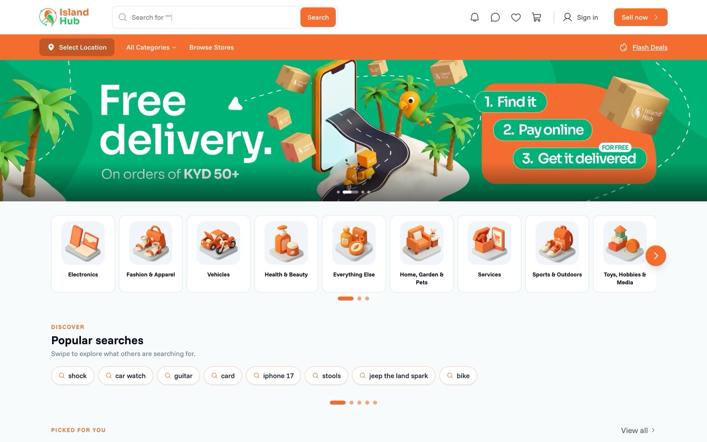
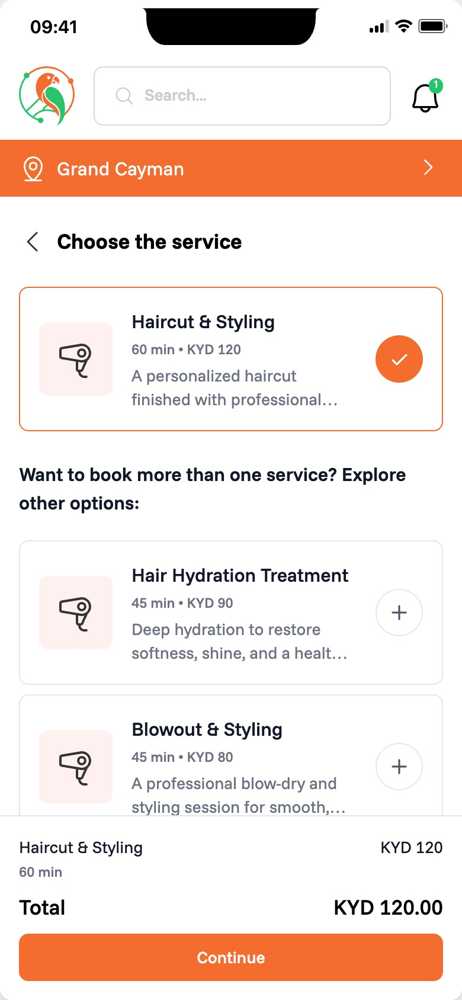
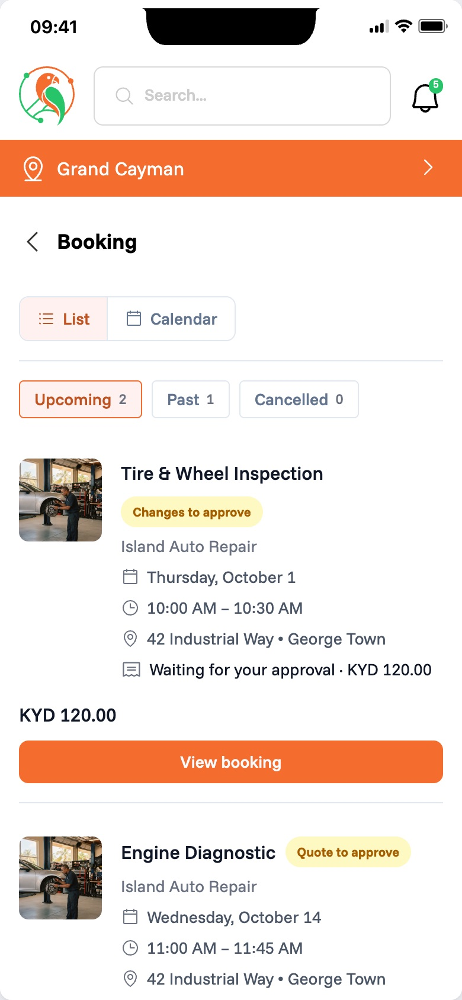
HOME · SERVIÇO · MEUS AGENDAMENTOS
NOS 3 PRIMEIROS MESES NO AR
O marketplace em números
~6.900visitantes únicos, cerca de 6% da população das Ilhas Cayman
560contas criadas
436anúncios publicados por 84 vendedores
67%dos vendedores que usaram a importação com IA chegaram à publicação
De 20/08 a 16/11/2026, dados do PostHog, sem contas de teste. Visitantes únicos são contados por navegador e dispositivo.
VISÃO GERAL
O projeto em três linhas
PROBLEMA
Vendas espalhadas em grupos de Facebook e no boca a boca: anúncios sem organização, pouca confiança, golpes e gente que não aparece. Quem chega precisa comprar rápido; quem vai embora precisa vender rápido.
SOLUÇÃO
Um marketplace único com busca e filtros por ilha, anúncio assistido por IA, chat com oferta, reputação, lojas para negócios locais, promoções e agendamento de serviços, leve para funcionar com internet limitada.
MEU PAPEL
Product Designer de ponta a ponta: escopo, personas e mapa da empatia, benchmarking, arquitetura e fluxos, especificação de cada funcionalidade, interface web e mobile, design system e protótipos para teste.
PROCESSO DE DESIGN
Comecei pelas pessoas e pelo contexto da ilha
Defini um MVP guiado por uma persona e só então desenhei. O trabalho seguiu quatro fases.
01
Descobrir
Escopo, público, personas, mapa da empatia e benchmarking de marketplaces.
Escopo · Personas · Mapa da empatia · Benchmarking
02
Definir
MVP guiado pela persona em foco, arquitetura e especificação de cada funcionalidade.
MVP · Arquitetura · Especificações e critérios de aceite
03
Desenhar
Interfaces web e mobile de compra, venda, conversa, lojas, promoções e serviços.
Fluxos · Interface · Estados · Regras
04
Entregar
Protótipos navegáveis para teste, documentação para o desenvolvimento e um design system.
Protótipos · Teste · Documentação · Design system
01
Fase Descobrir
Escopo e público
O escopo definiu as funcionalidades principais (cadastro e autenticação, navegação e busca, anúncios, chat interno, reputação e, numa versão futura, pagamentos e entrega) e quem o produto precisava atender:
Residentes locais (caymanians)Expatriados temporáriosJovens profissionaisPequenos empreendedores e artesãosLojas locais
Organização e praticidadeTudo numa só plataforma, com busca, categorias e filtros por localização.
Para quem chega ou saiComprar móveis e eletros rápido ao chegar, vender tudo rápido ao sair.
Comércio localEspaço digital gratuito para pequenos produtores e artesãos.
Menos golpes, mais confiançaAvaliações, chat interno e perfis verificados.
Inclusão digitalPara muitos, a primeira experiência com um marketplace estruturado.
Internet limitadaLeve e otimizado, sem depender de conexão de alta velocidade.
Personas
Cinco personas representam os públicos do escopo, de quem compra o primeiro sofá na ilha a quem vende artesanato pelo celular. A Jessa guiou o início do projeto.
PERSONA EM FOCO
Jessa
Auxiliar de enfermagem em hospital local
Idade27 anosOrigemFilipinasMora emWest Bay, há 3 anos
“Preciso vender meus móveis antes de voltar pra casa, mas não tenho tempo de ficar postando em vários grupos.”
OBJETIVOS
Comprar móveis usados a preços acessíveis
Vender tudo rapidamente antes de voltar para casa
Ajudar colegas a encontrar itens essenciais
FRUSTRAÇÕES
Depende de grupos fechados e desorganizados no Facebook
Precisa anunciar em várias línguas
Pouco tempo para processos longos de venda
EXPECTATIVAS
Anunciar rápido e achar compradores próximos
Marcar disponibilidade por turno de trabalho
Interface simples, em inglês básico
TECNOLOGIA
Usa apps de compra e venda
Faz chamadas por WhatsApp
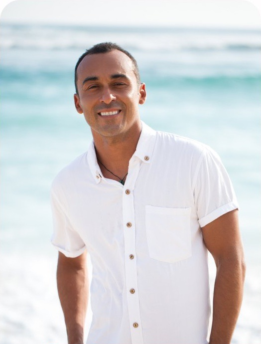
Thomas, 33
Funcionário público · George Town
“Tô cansado de marcar com gente no Facebook que nunca aparece pra buscar.”
OBJETIVOS
Comprar usados com segurança
Vender móveis ao renovar a casa
FRUSTRAÇÕES
Não confia em vendedores do Facebook
Perde tempo com quem não aparece
Daniel, 25
Desenvolvedor júnior · George Town
“Queria um lugar onde eu pudesse achar gadgets legais e trocar ideias direto com quem tá vendendo.”
OBJETIVOS
Comprar e vender gadgets
Achar bike elétrica ou scooter
FRUSTRAÇÕES
Muitos anúncios falsos
Interfaces sem foco na usabilidade
Marsha, 41
Comidas caseiras e artesanato · Bodden Town
“Se tivesse um aplicativo onde eu pudesse mostrar meus produtos de forma bonita, ia ajudar muito meu negócio.”
OBJETIVOS
Vender produtos locais pelo celular
Promover a marca sem site próprio
FRUSTRAÇÕES
Pouca visibilidade
Não acompanha pedidos por mensagem
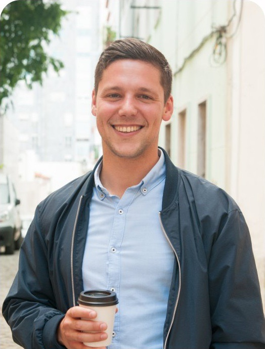
Mike, 38
Consultor de seguros remoto · Cayman Brac
“Morar em Cayman Brac é ótimo, mas é difícil encontrar coisas pra comprar sem ter que ir até George Town.”
OBJETIVOS
Mobiliar uma casa alugada
Comprar e vender antes de mudanças
FRUSTRAÇÕES
Poucas opções fora da ilha principal
Não conhece os bairros para buscar
Os perfis foram gerados com o apoio de inteligência artificial, a partir de dados reais e características culturais das Ilhas Cayman, para entender os públicos locais e desenhar telas alinhadas à realidade de quem vai usar o app.
Mapa da empatia · Jessa
Expatriados como a Jessa entram e saem das ilhas o tempo todo, fazem várias compras e vendas em pouco tempo e adotam rápido um app simples, recomendando para colegas.
PENSA
“Tomara que tenha um jeito fácil de achar coisas sem precisar ir muito longe.”
“Será que essa pessoa vai mesmo aparecer pra buscar?”
OUVE
Colegas dizendo que o Marketplace do Facebook é uma bagunça.
Histórias de golpes e promessas não cumpridas nas vendas informais.
VÊ
Grupos de venda confusos e lotados.
Falta de plataformas locais confiáveis.
DIZ
“Preciso vender tudo antes de voltar pra casa.”
“Não tenho tempo de ficar anunciando em mil lugares.”
DORES
Perder tempo com quem não responde ou não aparece.
Não conseguir vender antes de ir embora.
Comprar algo e se arrepender por falta de confiança.
GANHOS
Uma plataforma simples, rápida e confiável para anunciar.
Filtros por localização e categoria.
Chat interno e avaliações para negociar com segurança.
Benchmarking
O arquivo de referências reúne centenas de telas de marketplaces. Na criação de anúncio, a comparação entre Enjoei e OLX definiu a direção:
A forma do EnjoeiFoto primeiro e uma pergunta por tela, para anunciar sem esforço.
O rigor da OLXAtributos com valores fechados e condição granular, que viram filtro de busca.
02
Fase Definir
Um MVP guiado pela Jessa
Focar na Jessa permitiu um MVP enxuto. O ponto de partida foi o fluxo de quem quer vender rápido; depois, o de compra, com filtros práticos, localização e contato pelo chat, em telas e textos simples para quem tem o inglês como segunda língua.
Cadastro de itens rápido→Busca simples→Chat básico→Filtros por localização e preço
Especificar antes de desenhar a tela final
Cada funcionalidade ganhou uma especificação própria: visão geral, fluxo do usuário, estrutura da interface, estados, regras de validação, responsividade, acessibilidade e critérios de aceite. No login, por exemplo, nove estados:
DefaultFilledLoadingSuccessE-mail inválidoSenha incorretaConta inexistenteErro de redeMuitas tentativas
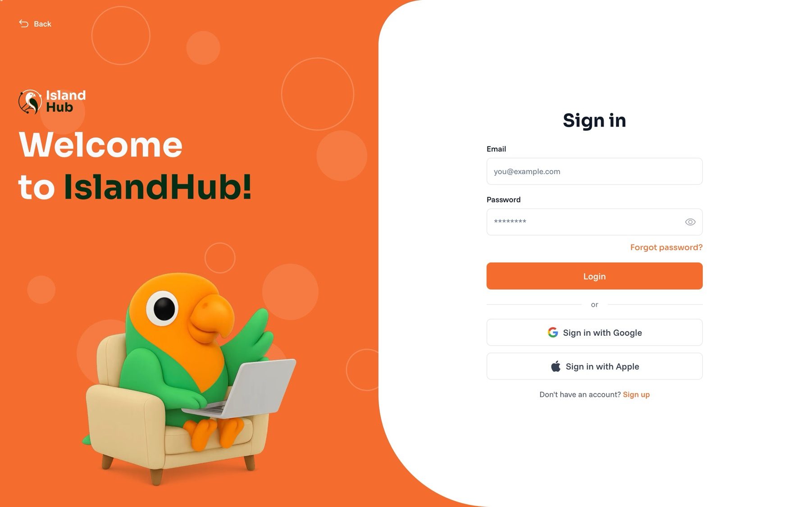
Arquitetura da informação
O produto se organiza em cinco grandes áreas, reconstruídas a partir das seções do arquivo de design.
IslandHub
Comprar
Home e categorias
Busca e filtros
Lojas
Flash Deals
Quick view
Carrinho
Vender
Manual
Assistente de IA
Importar de link
Importação em massa
Promoções
Conversar
Chat
Fazer oferta
Notificações
Minha conta
Perfil
Compras
Vendas e pedidos
Loja
Configurações
Serviços
Agendamento
Orçamento
Disponibilidade
LegendaÁreaTela ou conteúdoAção
03
Fase Desenhar
Busca e descoberta
Busca com sugestão automática e filtros por categoria, preço, condição e localização (Grand Cayman, Cayman Brac e Little Cayman), além de Flash Deals e navegação por lojas.
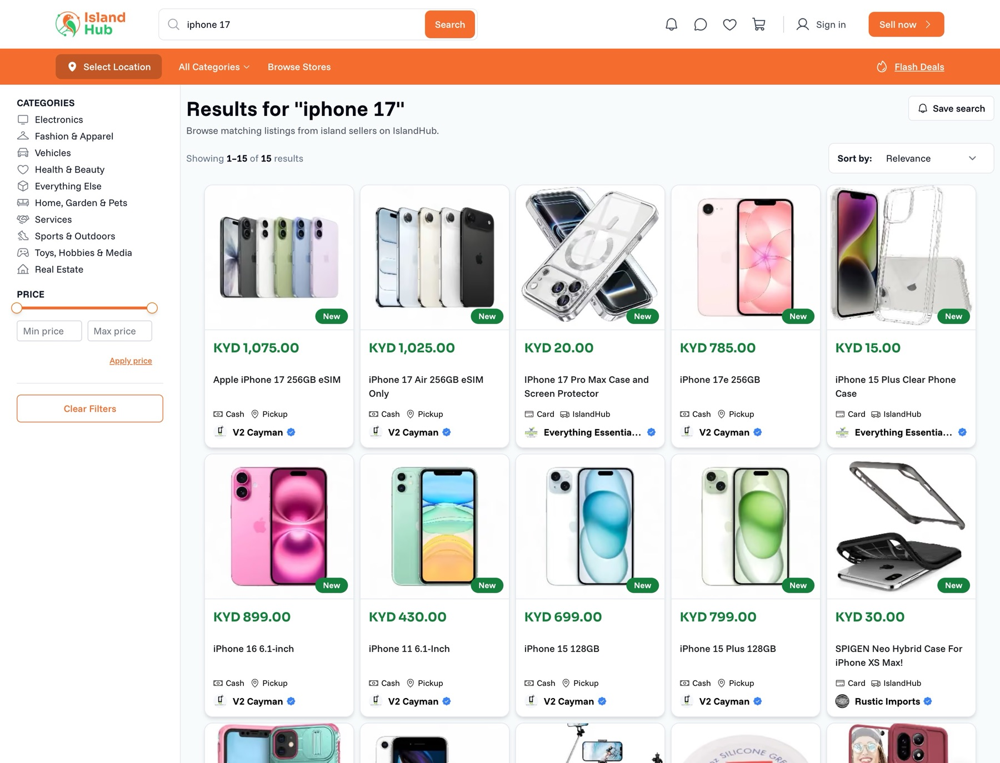
Busca, no ar
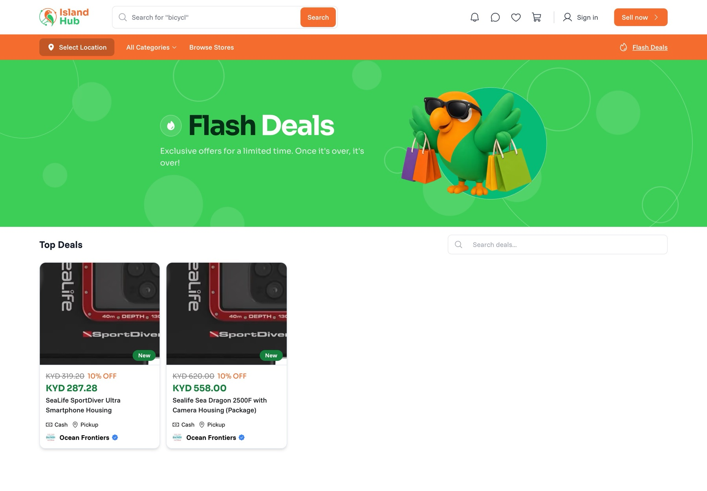
Flash Deals, no ar
Anunciar: quatro caminhos
O “Sell Now” oferece quatro jeitos de criar um anúncio: manual, passo a passo; assistente de IA, por conversa; importar de um link de outra plataforma; e importação em massa por planilha, para lojas com estoque grande. O fluxo manual cobre categoria, atributos, fotos, preço, quantidade e variantes, entrega (retirada, pelo vendedor ou IslandHub Delivery) e publicação gratuita ou paga.
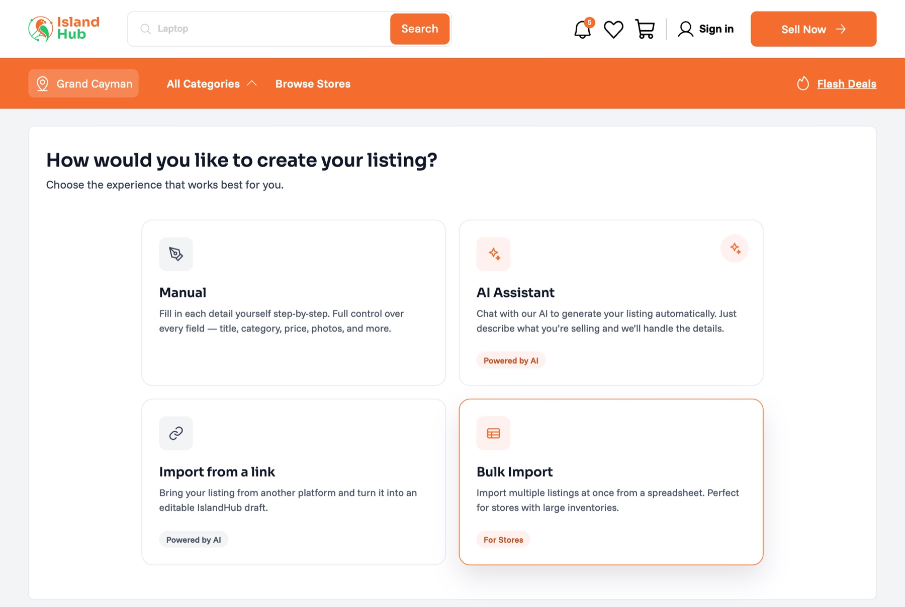
Sell Now, quatro caminhos
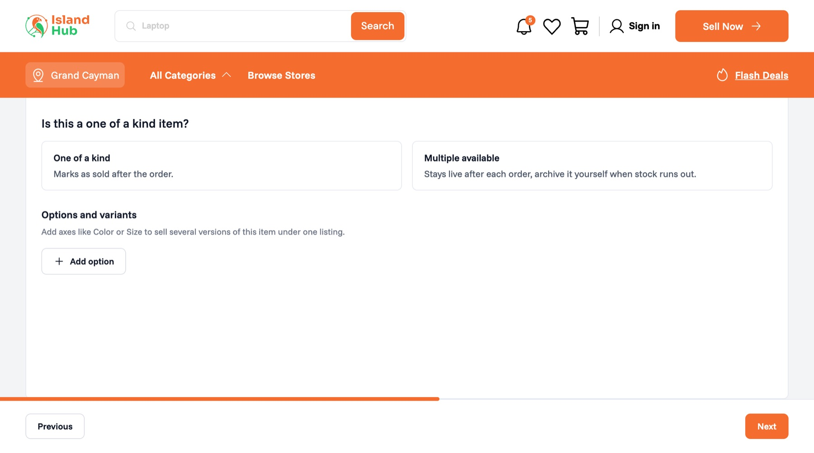
Peça única ou variantes
IA no anúncio, com limites claros
A IA não é um caminho paralelo, é uma camada: lê as fotos e devolve um rascunho que o vendedor só confirma. Três níveis de confiança decidem o comportamento de cada campo.
AutoCONFIANÇA ≥ 0,85 · CAMPO REVERSÍVELPreenche e marca com o selo de IA: cor, categoria, tipo de item, material. Um toque desfaz.
Sugere0,50 A 0,85 · OU CAMPO DE ALTO IMPACTOPré-seleciona, mas exige confirmação, com as alternativas mais prováveis ao lado: marca, modelo, tamanho.
PerguntaCAMPO VAZIOPergunta direto: preço, condição, autenticidade, defeitos, saúde da bateria.
A regra que não muda. A IA nunca preenche sozinha preço, condição, autenticidade nem identificadores como IMEI ou número de série. Ela sugere, mas a declaração é de quem vende.
Conversa e negociação
O chat liga comprador e vendedor ao anúncio, com respostas rápidas (“Ainda está disponível?”), envio de fotos e localização, e a oferta dentro da conversa: o vendedor aceita, recusa ou faz uma contraproposta.
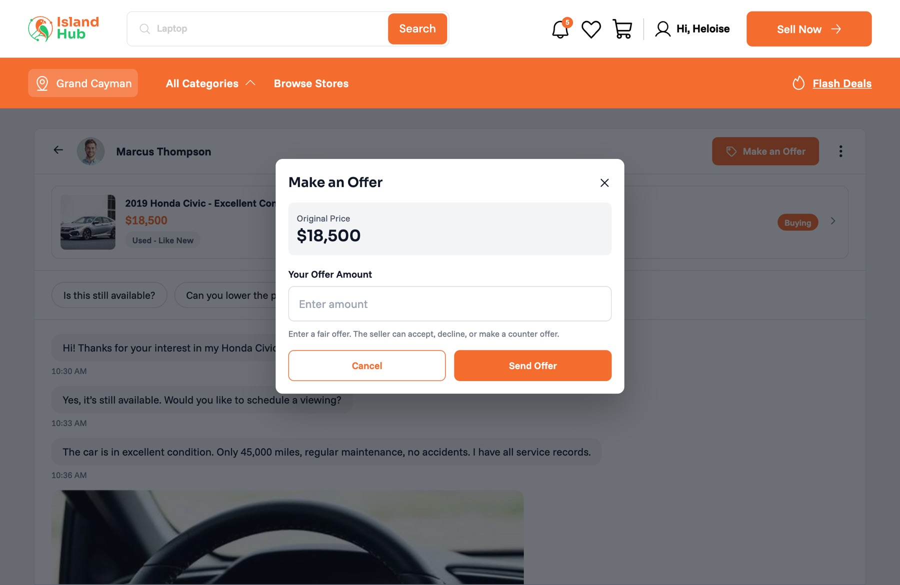
Compra e pedidos
Da visualização rápida à denúncia de anúncio, do carrinho com estados de estoque ao pagamento recusado. Para quem vende, cada pedido tem um status claro.
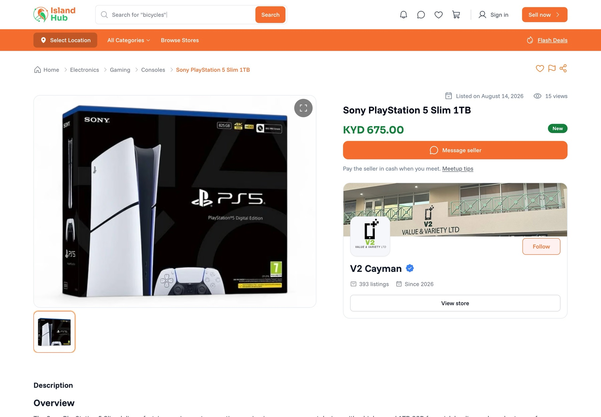
Página do anúncio no ar, com mensagem ao vendedor e a loja de quem vende
STATUS DO PEDIDO
Aguardando confirmaçãoEm preparaçãoPronto para retiradaSaiu para entregaConcluídoRecusadoCanceladoReembolsado
Lojas, promoções e banners
Negócios locais têm página de loja, com pré-visualização antes de publicar, cards patrocinados e promoções, da loja ou campanhas globais. As categorias ganharam banners e uma biblioteca de 357 ilustrações.
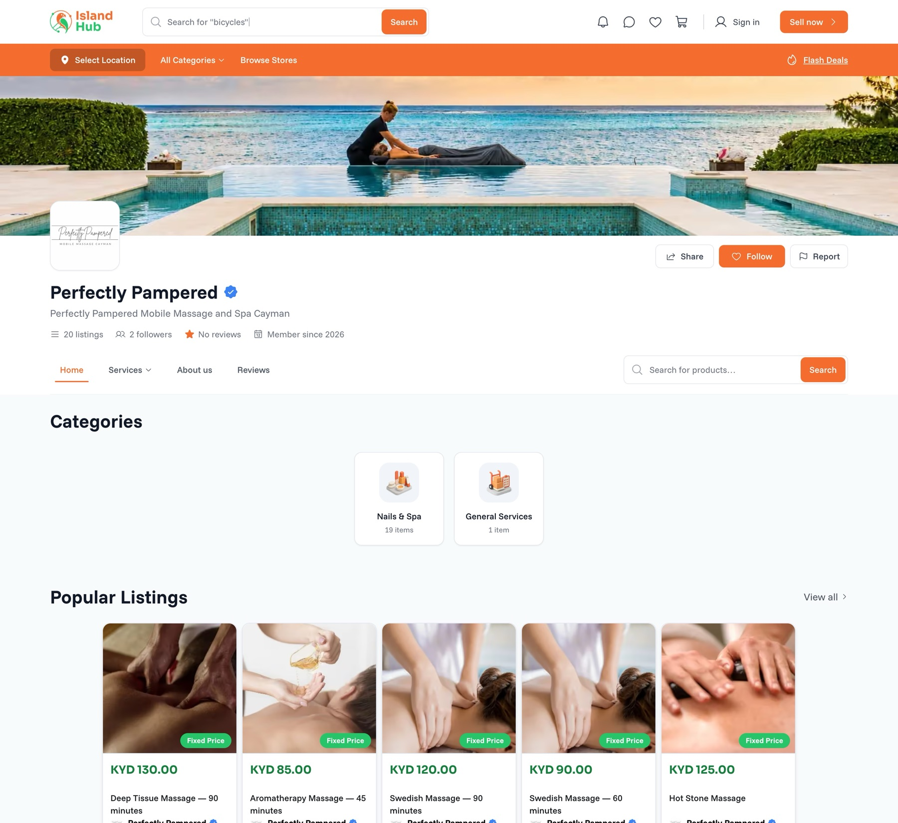
Página de loja no ar, com capa, selo de verificada, categorias e anúncios em destaque
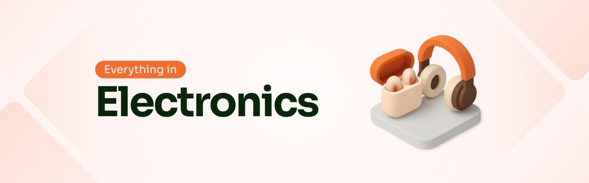
Serviços e agendamento
O marketplace também vende serviços. Desenhei dois modelos de agendamento:
Preço fixoComo num salão: o cliente escolhe o serviço e o horário, e a cobrança é automática depois do atendimento.
Por orçamentoComo numa oficina: o prestador confirma o horário e envia o orçamento para aprovação. Se o valor final mudar, o cliente aprova antes da cobrança.
Escolher serviço→Data e horário→Revisar→Solicitar→Prestador confirma→Atendimento→Cobrança e recibo
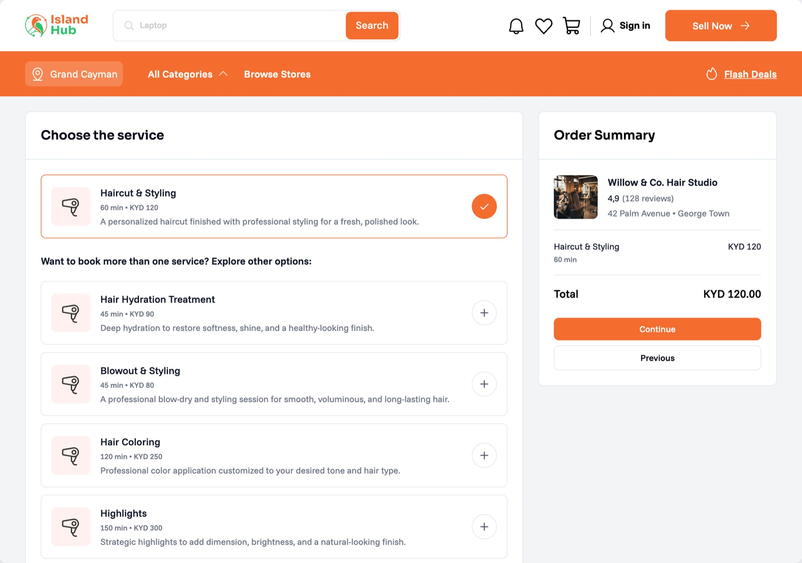
Cliente · escolher o serviço, dá para somar mais de um
Serviço
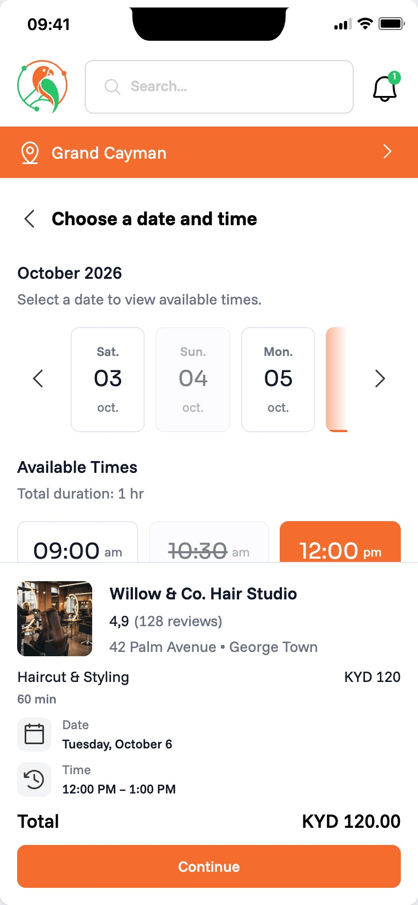
Data e horário
Meus agendamentos
Regras e status do agendamento
Os status seguem a tabela definida com a liderança do produto. Cada um tem nome, cor e texto, e as transições entre eles viraram regras de negócio.
ABERTOS
PendenteReagendamento solicitadoConfirmado
ENCERRADOS
ConcluídoNão compareceuCancelado pelo clienteCancelado pelo prestadorRecusadoExpirado
Recusar um novo horário não cancelaSe o cliente recusa ou não responde a uma proposta de novo horário, o agendamento confirmado continua no horário original.
Encerrado não reabre“Agendar de novo” cria um agendamento novo, em vez de reabrir um antigo.
Prazo pela regra da lojaO prazo para responder segue o limite de reagendamento que a loja define nas configurações.
Calendário só quando confirmado“Adicionar ao calendário” aparece apenas para agendamentos confirmados.
Pagar no localDinheiro fora da plataforma: o prestador só marca o atendimento como concluído, sem gorjeta.
Taxa de cancelamento tardioA loja define a janela e a taxa (nenhuma, fixa ou percentual), cobrada só no cartão, em cancelamentos tardios e faltas.
04
Fase Entregar
Protótipos para testar com pessoas
O fluxo de venda virou um protótipo navegável com três cenários, um iPhone, uma calça e um sofá, e notas para conduzir a apresentação. O agendamento virou um protótipo para testar com duas pessoas ao mesmo tempo, cliente e prestador: tudo fica conectado, com cenários de teste guiados e um formulário de feedback em cada tela.
Documentação pronta para o desenvolvimento
Quando o time de desenvolvimento achou os fluxos difíceis de seguir, organizei no Figma uma página com 13 fluxos de agendamento. Cada tela aparece na ordem da experiência, com setas nomeadas pela ação e um cartão logo abaixo:
O QUE ACONTECEA ação do usuário naquela tela e o que o sistema faz em resposta.
REGRASAs regras de negócio numeradas que valem ali, do mesmo documento usado pelo time.
PRÓXIMO PASSOPara onde a pessoa vai depois, em cada caminho possível.
Design system
Um design system documentado dá base a tudo: tokens em camadas (primitivo, semântico e componente), tipografia, escalas, componentes de marketplace e badges de status de pedido, com correções de contraste obrigatórias, foco visível em todos os componentes e base em shadcn/ui para a implementação.
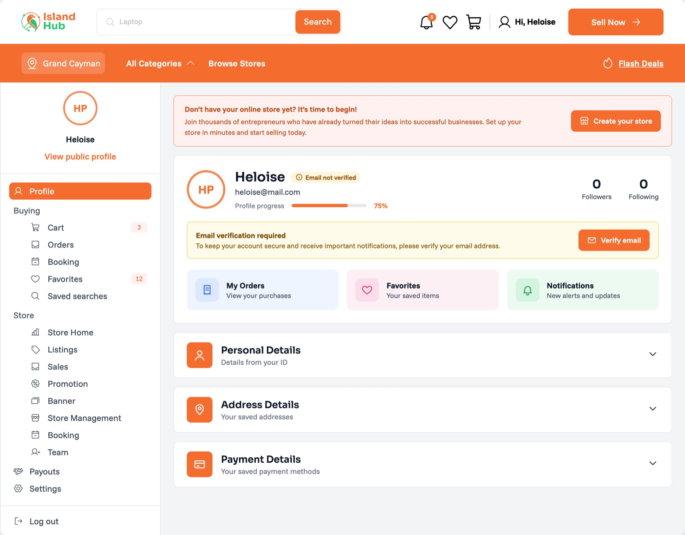
05
Como medir o sucesso
O que o mercado mostra
Cayman é uma ilha pequena e em movimento: muita gente chega e muita gente vai embora. É esse vaivém que faz um marketplace local confiável fazer sentido.
88.833habitantes nas Ilhas Cayman no fim de 2024, um mercado pequeno, em que confiança e reputação pesam muito.Economics and Statistics Office · Labour Force Survey, Fall 2024
~45%da população é de residentes não caymanianos, o público que chega e sai com frequência.ESO, dados de fim de 2024 (40.016 de 88.833)
~50%das pessoas que vivem em Cayman chegaram nos últimos 15 anos; 26% chegaram entre 2019 e 2024.Cayman News Service, com dados do ESO, 2025
Os indicadores, com dados reais
Os indicadores vieram da proposta de anúncio com IA. Com o produto no ar, a maioria já tem dado; os que ainda não têm viraram próximos passos de medição.
MEDIDO5,2
Anúncios por vendedor
436 anúncios de 84 vendedores. Quando anunciar é fácil, o vendedor volta para anunciar de novo.
MEDIDO92%
Anúncios que chegam ao ar
436 dos 472 anúncios criados foram publicados. O funil de anúncio quase não vaza.
MEDIDO67%
Importação com IA até publicar
12 dos 18 vendedores que começaram a importação de uma loja existente chegaram à publicação.
MEDIDO88 de 89
Aceitação do rascunho da IA
Depois de revisar o rascunho gerado pela IA, quase todos escolheram publicar na hora, sem deixar para revisar depois.
MELHORIA100% · 27,5%
Cobertura de atributos
Todos os anúncios têm foto, com média de 2,8. Mas só 27,5% têm subcategoria, o campo que mais ajuda a busca: virou o próximo ajuste do fluxo.
PRÓXIMO PASSOA medir
Tempo até publicar e disputas
O produto ainda não registra o início do fluxo de anúncio nem as disputas por descrição. São os próximos eventos a instrumentar.
De 20/08 a 16/11/2026, dados do PostHog, sem contas de teste.
06
Um produto pensado do zero
O IslandHub saiu do escopo para um produto completo e no ar, que em 3 meses recebeu cerca de 6.900 visitantes, 560 cadastros e 436 anúncios de 84 vendedores. Ele está organizado em quatro grandes áreas (acesso e marketplace, perfil, anúncio e promoção, lojas e serviços), com especificações por funcionalidade, protótipos navegáveis e um design system documentado.
~1.600Telas desenhadas
13Fluxos de agendamento documentados
357Ilustrações na biblioteca
A persona define o MVPComeçar pela Jessa colocou o fluxo de venda rápida na frente de todo o resto.
IA é camada, não caminhoEla acelera o preenchimento, mas nunca assume uma declaração no lugar de quem vende.
Confiança se desenhaReputação, chat com oferta, verificação e denúncia substituem o “será que vai aparecer?”.
O contexto local muda o produtoTrês ilhas, distrito no lugar de CEP, KYD, internet limitada e entrega na ilha.
Especificar estados antes da tela finalErros, carregamento e critérios de aceite definidos cedo evitam retrabalho no desenvolvimento.
Regra de negócio também é interfaceCada status do agendamento tem nome, cor, texto e uma regra clara de transição.